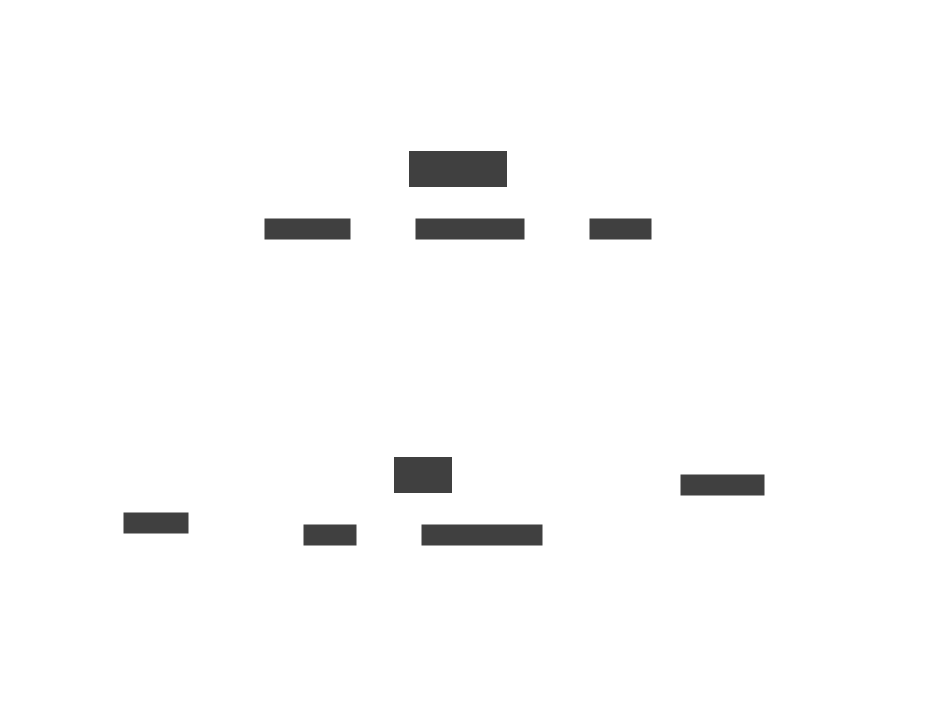
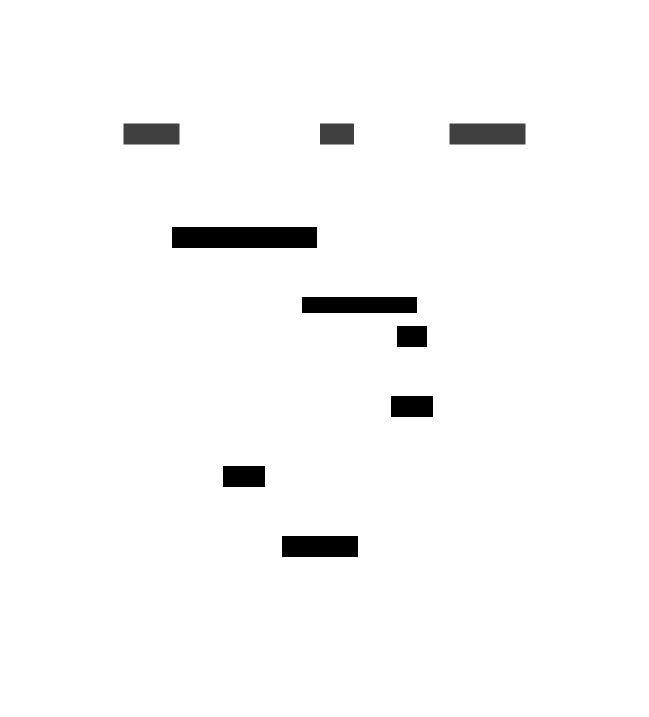

1 System architecture
Several different software components are required to ensure the system can:
- persist general data on disk, such as node telemetry and hardware information
- receive and store large volumes of radio signal samples organized in
- maintain a reliable and fault-tolerant connection between the backend and an unknown number of nodes
The currently implemented software architecture is summarized in Figure 1.1.

1.1 High-level components
OpenRFSense is built upon several different modern technologies, interconnected by mainstream networking protocols.
1.1.1 Hardware
OpenRFSense is designed to run on a variety of hardware platforms, including PCs, servers, and embedded systems. The hardware requirements depend on the specific use case and workload, but typically include a multi-core processor, sufficient memory and storage, and one or more software-defined radio (SDR) devices acting as signal receivers.
1.1.2 Software-defined radio
OpenRFSense relies on one or more SDR devices to capture and analyze radio frequency signals. The SDR devices are connected to the hardware platform via USB or PCIe interfaces and can be controlled using open-source software libraries such as GNU Radio. The SDR device is responsible for capturing radio signals from the environment.
1.1.3 Operating system
Thanks to the choice of programming language (Golang (“The Go Programming Language,” n.d.)), both the backend and node software can be compiled and deployed on most modern operating systems and hardware configurations (e.g. Windows on ARM, Linux on x86, MacOS on M1). The backend service is also developed with containerization in mind, making it possible to deploy the software securely and avoiding strict dependency on host system configuration.
1.1.4 Signal processing and analysis
OpenRFSense uses a variety of signal processing and analysis techniques to extract useful information from the captured radio frequency signals. This includes techniques such as Fast Fourier Transform (Heideman, Johnson, and Burrus 1984) (FFT), digital signal processing (DSP), and machine learning algorithms. See ?@sec-signalProcessing for a more in-depth explanation of the data analysis process.
1.1.5 User interface and management
OpenRFSense provides a web-based user interface for configuring, managing, and visualizing the captured data. The user interface includes features such as real-time spectrum displays, signal analysis tools, and alerting mechanisms. The system also provides APIs for integration with external tools and services.
1.2 Backend architecture
The backend service is a monolithic application which combines user interface and data management code. It can be broken down into several modular components which all depend only on shared configuration in the form of a file or environment variables on the host system.
The internal messaging service maintains a constant communication stream between the backend and the various nodes deployed by the user. It provides a scalable and fault-tolerant solution for message delivery to the remote nodes. It is documented in ?@sec-serviceMessaging.
Another critical component is the web-based user interface (UI) which is the main interactive mean for the user to communicate with the other components inside the backend service. An in-depth explanation, complete with other high-level considerations, is contained in ?@sec-ui.
1.2.1 REST API
To allow external access to stored data, a REST (REpresentational State Transfer, defined in (R. T. Fielding and Taylor 2000)) API is provided by the backend. Such a system allows authorized applications to query data through a standardized interface. Currently, the following data can be fetched from the backend:
- signal measurements taken by a specific node and belonging to a certain campaign
- a list of all nodes currently connected to the messaging system
- node metrics and system status for a specific node
The API can also actively request actions to be carried out by the nodes. To ensure bad actors cannot arbitrarily send command requests to the system, all requests which perform an action that can change the state of the system require a form of authentication. The currently implemented authentication method is Basic HTTP Authentication (a Web standard, see (R. Fielding and Reschke 2014)).
1.2.2 Signal measurements storage
Since radio signal data can be dense and structured as large inbound TCP packets, a storage layer capable of extremely fast writes to memory is needed. The BadgerDB (“BadgerDB,” n.d.) key-value store was chosen due to the maturity of the software and it being natively developed in Golang, providing easier integration into the existing backend code. BadgerDB is capable, in optimal conditions (sufficient RAM and a modern solid state disk), of writing several gigabytes of data per second to disk. In practical testing, BadgerDB has proven more than sufficient for handling raw inbound signal data from several nodes at a time.
1.2.3 Database access layer
A support database is used to store persistent data, which is required to survive service outages or is generally better kept for an unspecified amount of time. PostgreSQL (Group 2023) was chosen mainly due to the maturity and notoriety of the project. From the project website:
PostgreSQL is a powerful, open source object-relational database system that uses and extends the SQL language combined with many features that safely store and scale the most complicated data workloads.
PostgreSQL is widely available and easily deployable even using container technology. A native Golang implementation of the database connection and communication protocol is used internally to store data such as past node metrics received through the messaging system, or signal measurement campaign data (start date and time, end date and time, etc.). Such data is then available for querying through the REST API documented above (in Section 1.2.1).
1.3 Node architecture
The node software is developed upon much the same technologies as the backend to ease integration between the two and reduce development overhead. Being developed to run natively on embedded devices as a self-contained application, several software components are needed to fullfil all required functions.
The application is available both as a standalone, statically-linked executable and a more user-friendly prebuilt system image based on the Raspbian OS. The system image comes pre-configured with required system components such as:
- a SystemD (“Systemd,” n.d.) service which starts the node management software on boot
- the OpenRFSense node management application
- the external, low-level program which interfaces with the SDR hardware (
orfs-sensor) - some useful signal decoding software, also part of the project
The following sections describe the main components of the node management software.
1.3.1 System metrics collector
A critical component for the node software is the metrics collector. This component is responsible for providing a current snapshot of the status of both hardware and software of the system, which will then be stored by the backend. The metrics message format and message exchange is documented more extensively in ?@sec-metrics.
1.3.2 Process manager
The node software relies on an external process for data acquisition and delivery. Not being originally developed with integration in mind, such a program is managed as a zero-knowledge black box, executed as a child process by generating command-line arguments and passing them to the program.

1.3.3 User interface
Much like the backend, the node provides users with a web-based UI to manage system functionality. Additionally, the UI lets users configure and reboot the system without needing an external monitor or peripherals for easier system administration of embedded devices. A description of the node UI with screenshots is contained in ?@sec-nodeUi.
The interface is only accessible on the same network as the node, to avoid exposing administration functionality to the public internet. Additionally, for thirty minutes after the system is booted, the UI is accessible by connecting to the device through a temporary WiFi access point if the hardware is capable of creating one such connection.